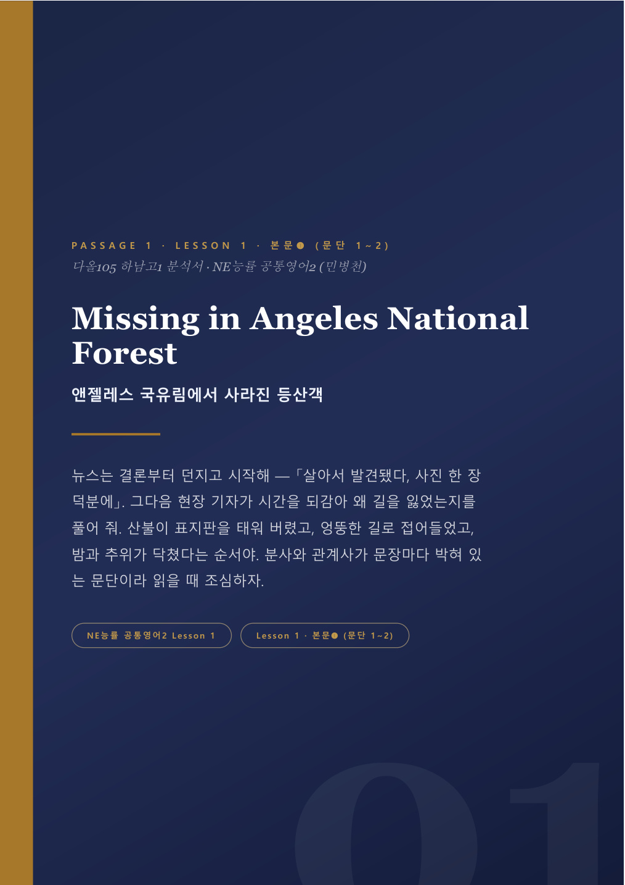
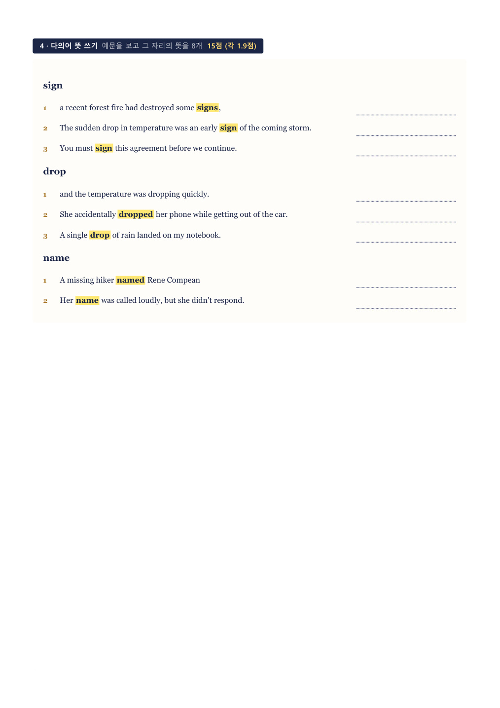

<meta charset="utf-8">
<meta name="viewport" content="width=device-width,initial-scale=1">
<title>하남고 1학년 영어 — 2학기 중간 대비 | 주간내신</title>
<meta name="description" content="하남고 1학년 공통영어1 1학기 중간·기말 77문항 전수 분석. 다의어 13문항 32.4점, 변형 강도 45%→59%. 2학기 중간 대비 분석서·워크북 무료 배포.">
<meta name="keywords" content="하남고 영어, 하남고 1학년 영어, 하남고 내신, 하남고 기출분석, 하남 영어학원, 공통영어1">
<meta property="og:title" content="하남고 1학년 영어 — 77문항 전수 분석">
<meta property="og:description" content="다의어 13문항 32.4점. 수능 문제집에는 없는 유형입니다.">
<link rel="canonical" href="https://jayu0422-blip.github.io/jugan-naesin/hanam/">
<link rel="stylesheet" href="https://fonts.googleapis.com/css2?family=JetBrains+Mono:wght@600;700&display=swap">
<style>
@import url('https://cdn.jsdelivr.net/gh/orioncactus/pretendard@v1.3.9/dist/web/static/pretendard.css');

:root{
  --ground:#F7F5F0; --panel:#FFFFFF; --sunk:#EFEBE2;
  --line:#E1DBCF; --line2:#CFC7B6;
  --ink:#14192A; --mut:#5F6675; --dim:#8B909C;
  --navy:#0F1B33; --gold:#B0761A; --red:#B03A1C;
  --bar:#0F1B33; --bar2:#C9A24E;
}
@media (prefers-color-scheme: dark){
  :root:not([data-theme="light"]){
    --ground:#0A1220; --panel:#131E30; --sunk:#0E1727;
    --line:#22314A; --line2:#2E4060;
    --ink:#EDF1F7; --mut:#93A2B9; --dim:#6E7C93;
    --navy:#C8D6EC; --gold:#E8A33D; --red:#F0805C;
    --bar:#8FB4E8; --bar2:#E8A33D;
  }
}
:root[data-theme="dark"]{
  --ground:#0A1220; --panel:#131E30; --sunk:#0E1727;
  --line:#22314A; --line2:#2E4060;
  --ink:#EDF1F7; --mut:#93A2B9; --dim:#6E7C93;
  --navy:#C8D6EC; --gold:#E8A33D; --red:#F0805C;
  --bar:#8FB4E8; --bar2:#E8A33D;
}

*{box-sizing:border-box;margin:0;padding:0}
body{background:var(--ground);color:var(--ink);
  font-family:'Pretendard','Malgun Gothic',-apple-system,sans-serif;
  font-size:16px;line-height:1.68;-webkit-text-size-adjust:100%}
.mono{font-family:'JetBrains Mono',ui-monospace,monospace;font-variant-numeric:tabular-nums}
.wrap{max-width:760px;margin:0 auto;padding:0 22px}
b{font-weight:800}

/* HERO */
header{background:var(--navy);color:#F3EFE6;padding:62px 0 54px;position:relative;overflow:hidden}
:root[data-theme="dark"] header,
:root:not([data-theme="light"]) header{background:#0D1626}
@media (prefers-color-scheme: light){:root:not([data-theme="dark"]) header{background:#0F1B33}}
header::after{content:"週";position:absolute;top:22px;right:24px;font-size:34px;font-weight:900;color:#E8A33D;opacity:.5}
.eyebrow{font-family:'JetBrains Mono',monospace;font-size:11.5px;font-weight:700;letter-spacing:.16em;
  color:#E8A33D;margin-bottom:18px}
header h1{font-size:clamp(29px,7vw,44px);font-weight:900;line-height:1.18;letter-spacing:-.04em;
  color:#F3EFE6;text-wrap:balance;word-break:keep-all}
header p{margin-top:18px;font-size:16px;line-height:1.72;color:#A5B2C6;word-break:keep-all;max-width:56ch}
header p b{color:#F3EFE6}
.dday{display:inline-flex;align-items:baseline;gap:9px;margin-top:24px;background:rgba(232,163,61,.15);
  border:1px solid rgba(232,163,61,.42);border-radius:12px;padding:11px 17px}
.dday span{font-size:13px;font-weight:700;color:#E8A33D}
.dday b{font-family:'JetBrains Mono',monospace;font-size:22px;font-weight:700;color:#E8A33D}
.hcta{display:flex;gap:9px;margin-top:26px;flex-wrap:wrap}
.hcta a{flex:1;min-width:150px;text-align:center;text-decoration:none;font-size:15.5px;font-weight:800;
  padding:15px 16px;border-radius:12px}
.hcta .p{background:#E8A33D;color:#0F1B33}
.hcta .s{background:rgba(255,255,255,.11);color:#F3EFE6;border:1px solid rgba(255,255,255,.2)}

section{padding:52px 0}
section+section{border-top:1px solid var(--line)}
.kick{font-family:'JetBrains Mono',monospace;font-size:11px;font-weight:700;letter-spacing:.15em;
  color:var(--gold);margin-bottom:11px}
h2{font-size:clamp(21px,4.9vw,30px);font-weight:900;letter-spacing:-.03em;line-height:1.28;
  text-wrap:balance;word-break:keep-all}
h2+.lead{margin-top:14px}
.lead{font-size:15.5px;color:var(--mut);word-break:keep-all;max-width:60ch}
.lead b{color:var(--ink)}

/* 큰 숫자 */
.hero-num{margin-top:26px;background:var(--panel);border:1px solid var(--line);border-radius:18px;
  padding:26px 24px;box-shadow:0 8px 22px rgba(20,25,40,.06)}
.hero-num .big{font-family:'JetBrains Mono',monospace;font-size:clamp(52px,14vw,84px);font-weight:700;
  line-height:.95;letter-spacing:-.05em;color:var(--red)}
.hero-num .unit{font-size:20px;font-weight:800;color:var(--mut);margin-left:6px}
.hero-num p{margin-top:14px;font-size:15px;line-height:1.7;color:var(--mut);word-break:keep-all}
.hero-num p b{color:var(--ink)}

/* 스탯 그리드 */
.grid{display:grid;gap:11px;margin-top:24px}
@media(min-width:620px){.grid.c2{grid-template-columns:1fr 1fr}.grid.c3{grid-template-columns:repeat(3,1fr)}}
.card{background:var(--panel);border:1px solid var(--line);border-radius:15px;padding:19px 20px}
.card .n{font-family:'JetBrains Mono',monospace;font-size:30px;font-weight:700;color:var(--gold);
  letter-spacing:-.03em;line-height:1}
.card h4{margin-top:9px;font-size:15.5px;font-weight:800;letter-spacing:-.02em}
.card p{margin-top:6px;font-size:13.5px;line-height:1.62;color:var(--mut);word-break:keep-all}

/* 비교 막대 */
.bars{margin-top:24px;background:var(--panel);border:1px solid var(--line);border-radius:16px;padding:22px 22px 18px}
.bar-row{margin-bottom:20px}
.bar-row:last-child{margin-bottom:0}
.bar-lab{display:flex;justify-content:space-between;align-items:baseline;font-size:14px;font-weight:700;margin-bottom:8px}
.bar-lab .v{font-family:'JetBrains Mono',monospace;font-size:17px;color:var(--red)}
.bar-track{height:14px;background:var(--sunk);border-radius:99px;overflow:hidden}
.bar-fill{height:100%;border-radius:99px;background:var(--bar)}
.bar-fill.hot{background:var(--red)}
.bar-note{margin-top:14px;font-size:13.5px;color:var(--mut);line-height:1.65;word-break:keep-all}
.bar-note b{color:var(--ink)}

/* 표 */
.tbl{margin-top:22px;overflow-x:auto;border:1px solid var(--line);border-radius:14px;background:var(--panel)}
table{width:100%;border-collapse:collapse;font-size:14px;min-width:430px}
th,td{padding:12px 14px;text-align:left;border-bottom:1px solid var(--line)}
th{background:var(--sunk);font-weight:800;font-size:13px;color:var(--mut);white-space:nowrap}
tr:last-child td{border-bottom:0}
td.num{font-family:'JetBrains Mono',monospace;font-variant-numeric:tabular-nums;white-space:nowrap}
td b{color:var(--red)}

/* 인용 박스 */
.quote{margin-top:22px;background:var(--sunk);border-left:3px solid var(--red);border-radius:0 14px 14px 0;
  padding:18px 20px;font-size:15.5px;line-height:1.72;word-break:keep-all}
.quote b{color:var(--red)}

/* 자료 카드 */
.files{display:grid;gap:14px;margin-top:24px}
@media(min-width:620px){.files{grid-template-columns:1fr 1fr}}
.file{background:var(--panel);border:1px solid var(--line);border-radius:17px;overflow:hidden;
  box-shadow:0 8px 22px rgba(20,25,40,.06);display:flex;flex-direction:column}
.file img{display:block;width:100%;height:auto;border-bottom:1px solid var(--line);background:var(--sunk)}
.file .b{padding:17px 18px;display:flex;flex-direction:column;flex:1}
.file h4{font-size:16.5px;font-weight:900;letter-spacing:-.02em}
.file .meta{margin-top:5px;font-family:'JetBrains Mono',monospace;font-size:12.5px;color:var(--dim)}
.file ul{margin:11px 0 0;padding-left:17px;font-size:13.5px;color:var(--mut);line-height:1.7}
.file .sp{flex:1;min-height:10px}
.dl{display:block;margin-top:14px;background:var(--navy);color:var(--ground);text-align:center;
  font-size:15px;font-weight:800;padding:13px;border-radius:11px;text-decoration:none}
:root[data-theme="dark"] .dl{color:#0A1220}
@media (prefers-color-scheme: dark){:root:not([data-theme="light"]) .dl{color:#0A1220}}

/* 신청 */
.apply{background:var(--navy);color:#F3EFE6;border-radius:20px;padding:30px 24px;margin-top:26px}
.apply h3{font-size:23px;font-weight:900;letter-spacing:-.03em;color:#fff;word-break:keep-all}
.apply p{margin-top:12px;font-size:15px;line-height:1.72;color:#A5B2C6;word-break:keep-all}
.apply p b{color:#E8A33D}
.free-tag{display:inline-block;margin-top:18px;background:#E8A33D;color:#0F1B33;font-size:15px;
  font-weight:900;padding:10px 18px;border-radius:11px}
.was{margin-top:9px;font-size:13.5px;color:#7C8BA3;text-decoration:line-through}
.apply .go{display:block;margin-top:20px;background:#E8A33D;color:#0F1B33;text-align:center;
  font-size:16.5px;font-weight:900;padding:16px;border-radius:12px;text-decoration:none}
.mini{margin-top:11px;font-size:12.5px;color:#7C8BA3;text-align:center}

footer{background:var(--sunk);border-top:1px solid var(--line);padding:30px 0 40px;
  font-size:12.5px;color:var(--dim);line-height:1.85;text-align:center}
footer b{color:var(--mut)}
</style>

<header><div class="wrap">
  <div class="eyebrow mono">HANAM HIGH SCHOOL · GRADE 1 · ENGLISH</div>
  <h1>하남고 1학년 영어,<br>1학기 시험지 <span class="mono">77</span>문항을<br>전부 뜯어봤습니다.</h1>
  <p>중간 40문항, 기말 37문항. 배점·정답·출처·변형 방식까지 문항 하나하나 원문과 대조했습니다.
     <b>그 결과로 2학기 중간 자료를 만듭니다.</b></p>
  <div class="dday"><span>2학기 중간</span><b>10월 12일</b></div>
  <div class="hcta">
    <a class="p" href="#files">자료 먼저 받기</a>
    <a class="s" href="#apply">시즌 신청하기</a>
  </div>
</div></header>

<section><div class="wrap">
  <div class="kick mono">01 — 가장 먼저 아셔야 할 것</div>
  <h2>하남고는 다의어를<br>13문항 냅니다.</h2>
  <div class="hero-num">
    <div><span class="big mono">32.4</span><span class="unit">점</span></div>
    <p>밑줄 친 단어와 <b>같은 의미로 쓰인 것</b>을 고르는 유형입니다.
       중간 5문항, 기말 8문항 — 합쳐서 <b>77문항 중 13문항, 배점 32.4점.</b>
       기말만 보면 37문항 중 8문항이 이 한 유형이었습니다.</p>
  </div>
  <div class="quote">
    이 유형은 <b>수능과 학평에는 사실상 없습니다.</b><br>
    수능 문제집만 돌린 아이는 32점을 준비 없이 맞이합니다.
  </div>
  <p class="lead" style="margin-top:20px">그것도 선지가 전부 <b>영어 사전 예문형</b>입니다.
    한국어 뜻을 외운 것으로는 안 되고, 문맥 속 의미가 같은지를 판단해야 합니다.
    실제로 나온 단어는 right · much · case · appreciate · likelihood · give up · arise · rank · post · sign · reflect · respect · subject 였습니다.</p>
</div></section>

<section><div class="wrap">
  <div class="kick mono">02 — 중간에서 기말로</div>
  <h2>변형 강도가<br>45%에서 59%로 올랐습니다.</h2>
  <p class="lead">교재 원문을 그대로 낸 문항이 줄고, 손을 대서 낸 문항이 늘었습니다.
    <b>1학기 중간을 잘 본 아이가 기말에 무너진 이유</b>가 여기 있습니다.</p>
  <div class="bars">
    <div class="bar-row">
      <div class="bar-lab"><span>1학기 중간 · 40문항</span><span class="v mono">45%</span></div>
      <div class="bar-track"><div class="bar-fill" style="width:45%"></div></div>
    </div>
    <div class="bar-row">
      <div class="bar-lab"><span>1학기 기말 · 37문항</span><span class="v mono">59%</span></div>
      <div class="bar-track"><div class="bar-fill hot" style="width:59%"></div></div>
    </div>
    <div class="bar-note">
      중간은 원문+출제장치 20 / 변형 18 / 자작 2,<br>
      기말은 원문+출제장치 14 / <b>변형 22</b> / 자작 1이었습니다.<br>
      기말에는 <b>원문에 없는 문장을 새로 만들어 그 안에 어법 오류를 심는</b> 방식까지 등장했습니다.
    </div>
  </div>
</div></section>

<section><div class="wrap">
  <div class="kick mono">03 — 시험 구조</div>
  <h2>서술형이 없습니다.<br>전 문항 선택형, 정확히 100.0점.</h2>
  <p class="lead">배점이 소수점 한 자리로 흩어져 있어 합이 정확히 100.0이 됩니다.
    동형을 만들 때 이 구조를 그대로 따라야 실제 시험과 같은 감각이 나옵니다.</p>
  <div class="tbl">
    <table>
      <thead><tr><th>항목</th><th>1학기 중간</th><th>1학기 기말</th></tr></thead>
      <tbody>
        <tr><td>시행일</td><td class="num">4월 27일</td><td class="num">6월 29일</td></tr>
        <tr><td>문항 수</td><td class="num">선택형 40문항</td><td class="num">선택형 37문항</td></tr>
        <tr><td>서술형</td><td><b>없음</b></td><td><b>없음</b></td></tr>
        <tr><td>배점 범위</td><td class="num">2.1 ~ 2.9</td><td class="num">2.2 ~ 3.2</td></tr>
        <tr><td>3점대 문항</td><td class="num">0개</td><td class="num"><b>8개</b></td></tr>
        <tr><td>세트 문항</td><td class="num">7세트</td><td class="num">7세트</td></tr>
        <tr><td>총점</td><td class="num">100.0</td><td class="num">100.0</td></tr>
      </tbody>
    </table>
  </div>
  <div class="quote" style="margin-top:20px">
    기말은 <b>마지막 세 문항이 3.1 · 3.1 · 3.2점</b>으로 끝납니다.<br>
    시험 후반부가 변별의 본체입니다. 시간 배분을 여기에 맞춰야 합니다.
  </div>
</div></section>

<section><div class="wrap">
  <div class="kick mono">04 — 영역별 비중</div>
  <h2>어휘가 최대 영역입니다.<br>기말은 100점 중 34.7점.</h2>
  <div class="grid c3">
    <div class="card"><div class="n mono">29.9%</div><h4>어휘</h4>
      <p>77문항 중 23문항. 경계 문항까지 넣으면 26문항 33.8%</p></div>
    <div class="card"><div class="n mono">17문항</div><h4>어법</h4>
      <p>중간 10 · 기말 7. 최다 빈출은 <b>분사 계열 7회</b>, 다음이 목적격보어 4회</p></div>
    <div class="card"><div class="n mono">9개 중 6</div><h4>반의어 교체</h4>
      <p>문맥 부적절 문항의 기본 장치. 지문당 교체는 정확히 1곳</p></div>
  </div>
  <p class="lead" style="margin-top:20px">어법은 <b>문장 단위 판별</b>이 기본입니다. 17문항 중 10문항이 문장을 고르는 방식이고,
    단어 하나에만 밑줄을 주는 문항은 6개뿐이었습니다. 그마저 개수형·조합형 같은 특수 발문과 결합됐습니다.</p>
</div></section>

<section><div class="wrap">
  <div class="kick mono">05 — 이 학교의 출제 철학</div>
  <h2>부교재를 외운 아이를<br>정확히 겨냥합니다.</h2>
  <div class="grid c2">
    <div class="card"><h4>① 오류를 옮겨 심습니다</h4>
      <p>EBS·학원 워크시트가 표시해 둔 오류 지점을 <b>원문으로 되돌린 뒤</b>, 전혀 다른 자리에 새 오류를 심습니다.
         워크북 정답 위치를 외운 학생은 정확히 빗나갑니다.</p></div>
    <div class="card"><h4>② 정답어를 동의어로 바꿉니다</h4>
      <p>부교재 네모의 정답 단어를 유의어로 교체합니다(content → satisfied).
         "원문과 다르면 오답"이라는 암기 풀이가 통하지 않습니다.</p></div>
    <div class="card"><h4>③ 유형을 통째로 바꿉니다</h4>
      <p>올림포스의 원래 유형(목적·내용불일치)을 거의 전부 다른 유형(어법·어휘)으로 재배정합니다.
         같은 지문인데 묻는 게 다릅니다.</p></div>
    <div class="card"><h4>④ 성실한 학생에겐 보상합니다</h4>
      <p>한쪽에서는 원문 그대로 출제해 제대로 읽은 학생을 챙깁니다.
         함정과 보상이 같은 시험에 공존합니다.</p></div>
  </div>
  <div class="quote" style="margin-top:22px">
    그래서 <b>"교재를 여러 번 푼다"</b>는 전략이 이 학교에서는 잘 통하지 않습니다.<br>
    같은 지문을 <b>다른 각도로 다시 묻는 연습</b>이 필요합니다.
  </div>
</div></section>

<section id="files"><div class="wrap">
  <div class="kick mono">06 — 지금 받으실 것</div>
  <h2>2학기 1·2과 자료가<br>먼저 완성됐습니다.</h2>
  <p class="lead">신청도 가입도 연락처 입력도 없습니다. 눌러서 바로 받으시면 됩니다.</p>
  <div class="files">
    <div class="file">
      
      <div class="b">
        <h4>지문 상세 분석서</h4>
        <div class="meta mono">120쪽 · PDF</div>
        <ul>
          <li>지문별 <b>직독직해 끊어읽기</b></li>
          <li>어법 박스 — 규칙이 아니라 "왜 이렇게 썼는가"</li>
          <li>「쉬운 해석」 — 노베이스도 읽히게 한 번 더</li>
          <li>흐름 도식 — 도입→전개→반전</li>
        </ul>
        <div class="sp"></div>
        <a class="dl" href="files/hanam1_analysis.pdf" download>분석서 받기 (14MB)</a>
      </div>
    </div>
    <div class="file">
      
      <div class="b">
        <h4>적중 워크북 + 답지</h4>
        <div class="meta mono">문제 33쪽 · 답지 38쪽 · PDF</div>
        <ul>
          <li>하남고가 실제로 내는 <b>다의어 유형</b> 집중</li>
          <li>어법 — 분사 계열·목적격보어 우선</li>
          <li>문맥 부적절 — <b>반의어 교체</b> 대비</li>
          <li>답지에 근거 문장 번호까지</li>
        </ul>
        <div class="sp"></div>
        <a class="dl" href="files/hanam1_workbook.pdf" download>워크북 받기 (0.7MB)</a>
        <a class="dl" href="files/hanam1_workbook_answer.pdf" download
           style="margin-top:8px;background:transparent;border:1px solid var(--line2);color:var(--ink)">답지 받기 (1MB)</a>
      </div>
    </div>
  </div>
  <div class="quote" style="margin-top:22px">
    지금 학원에서 받으신 자료를 꺼내, <b>이 분석서와 딱 한 번만 비교해 보세요.</b><br>
    과한 문법 용어를 늘어놓는 수업이나 정답만 적힌 해설과 무엇이 다른지 바로 보입니다.
  </div>
</div></section>

<section id="apply"><div class="wrap">
  <div class="kick mono">07 — 2학기 중간 시즌</div>
  <h2>범위가 나오면<br>나머지도 같은 방식으로 만듭니다.</h2>
  <div class="apply">
    <h3>하남고 1학년 전용<br>2학기 중간 시즌패스</h3>
    <p>범위 안 <b>부교재 전 지문 분석서</b>, 하남고 구조 그대로 만든 <b>동형 8세트 이상</b>,
       적중 워크북, 전 문항 해설.<br>
       교과서 본문은 저작권 때문에 다루지 않습니다. 대신 등급이 갈리는 부교재를 전 지문 다룹니다.</p>
    <span class="free-tag">론칭 이벤트 · 무료</span>
    <div class="was">원래 시즌 전체 69,000원</div>
    <a class="go" href="../v2/#apply">신청서 작성하기 →</a>
    <div class="mini">학습자료 제공 상품 · 강의·첨삭·학습관리는 포함되지 않습니다<br>
      다올105 재원생은 수업 중 무상 제공되므로 신청이 필요 없습니다</div>
  </div>
</div></section>

<footer><div class="wrap">
  <b>주간내신</b> · 하남고 1학년 영어 · 문의 010-7789-5094<br>
  다올105 · 대표 윤재영 · 사업자등록번호 269-99-01747<br>
  경기도 하남시 미사강변대로226번안길 35 청담프라자 401~405호<br>
  본 분석은 공개된 시험지를 자체 분석한 결과이며, 학교와 무관합니다.<br>
  자료는 학습 참고용이며 무단 복제·배포·재판매를 금합니다.
</div></footer>
